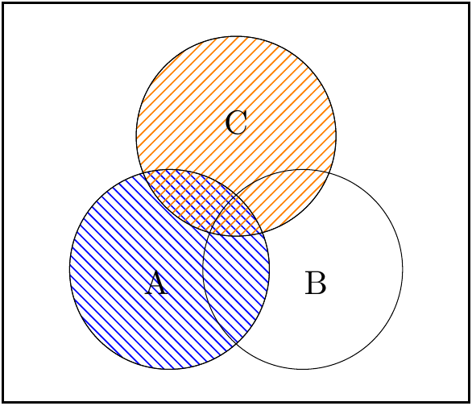

Chapter 2 Basic Probability
Background
Probability (or probability theory) is a branch of mathematics which rigorously describes uncertain (or random) systems and processes. It has its roots in the 16th/17th century with the work of Cardano, Fermat & Pascal.
The French mathematician and astronomer, Pierre Simon, Marquis de Laplace said,
“We see that the theory of probability is basically only common sense reduced to calculation; it makes us appreciate with exactitude what reasonable minds feel by a sort of instinct, often without being able to account for it….”
Perhaps this is too extreme, but it is also an area of modern development and application such as: modelling heredity disease in genetics, pension calculations in actuarial science, stock pricing in finance, epidemic modelling in public health.
Put simply, probability measures the chance of some event occurring:
- probability 0 means the event is impossible,
- probability 1 means the event is certain.
The larger the probability, the more likely the event. The details, however, are much more complex as we will see.

2.1 Sample space and events
Let the sample space, \(\Omega\) (the Greek letter capital “omega”), be the set of all possible outcomes of an experiment, and let \(\omega\) (small “omega”) be a single outcome, that is \(\omega \in \Omega\). Then, let \(|\Omega|\) (or \(\# \Omega\)) denote the number of possible outcomes.
An event, often denoted \(A, B, C,\ldots\), is a set of outcomes of an experiment. The set can be empty, \(A=\emptyset\), giving an impossible event, \(Pr(\emptyset)=0\), or can equal the sample space, \(A=\Omega\), giving a certain event, \(Pr(\Omega)=1\). These extremes are not every interesting and so the event will usually be a non-empty, proper subset of the sample space.
Example 2.1 Experiment: Toss three standard coins.
- \(\Omega = \{ (H,H,H),\) \((H,H,T),\) \((H,T,H),\) \((T,H,H),\) \((H,T,T),\) \((T,H,T),\) \((T,T,H),\) \((T,T,T) \}\) with \(|\Omega|=8\).
- Let \(A=\{\mbox{There are at least two heads}\}\) \({}=\{ (H,H,H), (H,H,T),(H,T,H),(T,H,H)\}\) with \(|A|=4\) and so \(Pr(A) = |A|/|\Omega| = 4/8=1/2\).
Example 2.2 Experiment: Roll two eight-sided dice.
- \(\Omega = \{ (1,1), (1,2),\ldots, (8,8) \}\) with \(|\Omega|=64\).
- Let \(A=\{\mbox{The sum equals 4}\}\) \({}=\{ (1,3), (2,2), (3,1)\}\) with \(|A|=3\) and so \(Pr(A) = |A|/|\Omega| = 3/64\).
Example 2.3 Experiment: Measure the height of a randomly selected student.
- \(\Omega = \mathbb{R^+}\) with \(|\Omega|= \text{“infinity''}\)
- Let \(A=\{\mbox{Height more than 1.6m}\}\) with \(|A|=\text{“infinity''}\)
- Clearly the situation is different here, in that there are infinity many values to consider – more on this type of situation later in the module. To assign a probability we might take a large number of students and consider the proportion with height greater than \(1.6m\).
There are several ways to assign probability:
- counting — as in the first two examples above.
- relative frequency, that is repeatedly performing an experiment under constant conditions — as in the third example.
- subjectively — for when there is no argument of symmetry and where the experiment cannot be repeated. For example, England winning the next football world cup.
We will look more at these ideas later in the module.
The Venn diagram
It is useful to show the relationships between events using Venn diagrams, such as the following.
- Points represent outcomes, with
- the box representing the sample space, and
- the shaded region represents the outcomes in an event.
Operations with events
The union of \(A\) and \(B\), written \(\color{red}{A\cup B}\) (say “A or B”), is the set of all outcomes belonging to at least one of the events \(A\) and \(B\).
The intersection of \(A\) and \(B\), written \(\color{green}{A\cap B}\) (say “A and B”), is the set of all outcomes belonging to both \(A\) and \(B\).
Events \(A\) and \(B\) are said to be mutually exclusive if they have no outcomes in common, then we write \(\color{green}{A\cap B=\emptyset}\), that is \(A\) and \(B\) cannot occur at the same time – we say that sets \(A\) and \(B\) are disjoint.
The complement of event \(A\), written \(A^c\) (say “A complement”) is the set of all outcomes which are not in \(A\).
Note that \(\Omega^c=\emptyset\) and \(\emptyset^c=\Omega\), also \(A\cup A^c=\Omega\) and \(A\cap A^c=\emptyset\).
The operations of union and intersection can be further combined to give various set identities, for example: \[ \left. \begin{array}{c} A\cup B = B\cup A \\ A\cap B = B\cap A \end{array} \right\} \mbox{Commutative laws} \]
\[ \left. \begin{array}{c} A\cup(B\cup C) = (A\cup B)\cup C \\ A\cap(B\cap C) = (A\cap B)\cap C \end{array} \right\} \mbox{Associative laws} % where the order of operation does not matter} \]
\[ \left. \begin{array}{c} (A\cup B)\cap C = (A \cap C)\cup (B\cap C) \\ (A\cap B)\cup C = (A \cup C)\cap (B\cup C) \end{array} \right\} \mbox{Distributive laws} \]
We can show, intuitively, that these laws are true by carefully constructing a set of Venn diagrams (but formal proof is more rigorous and powerful). As an example, consider the second distributive law. Drawing Venn diagrams of both left-hand side and right-hand side shows that the law is true. Starting with the left-hand side, we have

The left-hand figure is \(\color{purple}{A\cap B}\), the middle figure is \(\color{orange}{C}\), and the right-hand figure is \((\color{blue}{A}\cap \color{red}{B})\cup \color{orange}{C}\).
Then the right-hand side:

The left-hand figure is \(\color{blue}{A}\cup \color{orange}{C}\), the middle figure is \(\color{red}{B}\cup \color{orange}{C}\), and the right-hand figure is \((\color{blue}{A}\cup \color{orange}{C})\cap (\color{red}{B}\cup \color{orange}{C})\).
We see that the areas shaded in two right-hand figures are the same, and so we can claim that \((A\cap B)\cup C = (A\cup C)\cap (B\cup C)\) is a true statement.
Now complete Worksheet 1 on Venn diagrams to check your understanding.
2.2 The axioms and basic rules of probability
The (Kolmogorov) axioms of probability are:
- \(Pr(A)\ge 0\) for any event \(A\),
- \(Pr(\Omega)=1\) for any sample space \(\Omega\), and
- \(Pr(A\cup B) = Pr(A)+Pr(B)\) for mutually exclusive events \(A\) and \(B\) (that is where \(A\cap B)=\emptyset\)).
Clearly, these are very basic statements, but they are sufficient to allow many complex rules to be derived.
Consider the proof of following (basic) rules:
- \(Pr(A^c) = 1-Pr(A)\).
Starting with the set relation \[ A\cup A^c = \Omega \] then considering the probability of left and right \[ Pr(A\cup A^c) = Pr(\Omega) \] and using K3 and K2 \[ Pr(A) + Pr(A^c) = 1 \] leads to the required result \[ Pr(A^c) = 1-Pr(A). \]
- \(Pr(\emptyset)=0\).
Start by noting that \(\emptyset = \Omega ^c\), then by result (a) above with \(A=\Omega\) we have \[ Pr(\emptyset) =1-Pr(\Omega) \overset{\small \text{K2}}{=} 1-1 =0, \quad \mbox{as required}. \]
Note that in the final step, K2 has been written over the equals sign to show that axiom K2 is needed.
- If \(A \subseteq B\), then \(Pr(A) \le Pr(B)\).
Again, start with a set relation, \[ B = A\cup (B\cap A^c) \] then using K3, since \(A\cap(B\cap A^c)=\emptyset\), gives \[ Pr(B) = Pr(A) +Pr(B\cap A^c) \] and since \(Pr(B\cap A^c) \ge 0\) by K1 we get \[ Pr(B) \ge Pr(A), \quad \mbox{as required.} \]
A more important rule which can be derived from the axioms of probability is known as the addition rule for general events, \[ Pr(A\cup B) = Pr(A)+Pr(B) - Pr(A\cap B). \]
The key step is to realize that we can subdivide the events in the following two ways.

Starting with \[ A \cup B = B\cup (A\cap B^c) \] then using K3, since \(B\cap(A\cap B^c)=\emptyset\), gives \[\begin{equation} Pr(A \cup B) = Pr(B) + Pr(A\cap B^c). \tag{2.1} \end{equation}\]
Also using the set relation,

\[ A = (A\cap B)\cup (A\cap B^c) \] so, using K3 with \((A\cap B)\cap(A\cap B^c)=\emptyset\), we get \[\begin{equation} Pr(A) = Pr(A\cap B) +Pr(A\cap B^c). \tag{2.2} \end{equation}\]
Re-arranging (2.2) as \(Pr(A\cap B^c) = Pr(A) - Pr(A\cap B)\) and substituting into (2.1) gives \[ Pr(A\cup B) = Pr(A)+Pr(B) - Pr(A\cap B), \quad \mbox{as required.} \]
If \(A\) and \(B\) are mutually exclusive, then \(Pr(A\cap B)=0\) and hence this result reduces to K3 – no contradiction. Hence K3 is refereed to as the addition rule for mutually exclusive events.
This result generalises to more that two events. For example consider three events, \(A\), \(B\) and \(C\), which gives the following result \[\begin{align*} Pr(A\cup B\cup C) &= Pr(A)+Pr(B)+Pr(C) \\ & \quad {}-Pr(A\cap B)-Pr(B\cap C)-Pr(A\cap C) \\ & \quad {}+Pr(A\cap B\cap C). \end{align*}\]
2.3 Assignment of probability
Classical probability for equally-likely events
The classical approach to assigning probability is to consider each member of the (finite) sample space \(\Omega = \{\omega_1, \omega_2,\ldots, \omega_N\}\) to have equal probability. Then \[ Pr(\omega_i) = {1}\big/ {N} \quad \mbox{for } i=1, 2, \ldots, N=|\Omega|. \] Note that axioms K1 and K2 are clearly true. Now consider an event \(A\), then using K3, \[ Pr(A) = \sum _{\omega_i \in A} Pr(\omega_i)\] that is, the sum over all outcomes belonging to event \(A\), which can be written \[ Pr(A) = {|A|}\big/ {|\Omega |} \] that is the number of outcomes in the event of interest divided by the number of events in the sample space – we saw examples of this earlier. So, in the classical approach, it is vital to be able to count the number of outcomes in events and in the sample space – often this involves permutations and combinations, a topic called combinatorics.
Probability as relative frequency and the Law of Large Numbers
Examples of truly equally-probable events are rare — the best examples are rolling dice and tossing coins. There is, however, a 1 in 6000 chance of a standard coin landing on its edge — this is less than 0.0002 and so perhaps can be ignored. More surprisingly, the expected 50-50, moves to 51-49 in favour of landing the same side up as started up. Is this enough to make an equal-probable assumption a bad approximation?
What about other events commonly thought of as being equally probable, such as birthdays or births of boy/girl babies? We will explore these situations later in the module.
Suppose that we have a simple situation but where an argument of symmetry, and hence equal probability, is not valid, such as a bent coin. If the coin were “fair” then \(p\), the probability of `Heads, is a half, \(p=1/2\), whereas if the coin is “biased”, then \(p\ne 1/2\).
Suppose we toss the coin \(n\) times and let
\(S_n\) be the total number of Heads.
So for the sequence: Tails, Heads, Heads, Tails, Heads, if we evaluated \(S_n\) after each toss, we would have \(S_1=0\), \(S_2=1\), \(S_3=2\), \(S_4=2\), \(S_5=3\).
To estimate of the probability of Heads we can use the relative frequency of Heads,
\(\hat{p}_n = S_n/n\) and see this as depending on the number of tosses so far.
Which, for the above sequence gives:
\(\hat{p}_1=0/1=0\), \(\hat{p}_2=1/2\), \(\hat{p}_3=2/3\), \(\hat{p}_4=2/4=1/2\), \(\hat{p}_5=3/5\).
The Law of Large Numbers says that
\[
\hat{p}_n = \frac{S_n}{n} \quad \mbox{tends to} \quad p\qquad \mbox{ as } n \ \mbox{tends to} \ \infty.
\]
That is to say, as the number of tosses grows the random relative frequency of
Heads tends to a non-random value \(p\),
i.e. the probability of Heads.
A more technical explanation goes as follows. The convergence is understood in the sense that it becomes increasingly unlikely to observe even small deviations of the random quantity \(\hat{p}_n\) from the value \(p\), that is, for arbitrary small \(a>0\) \[ Pr\left(\left|\hat{p}_n -p\right|>a\right) \to 0 \qquad \mbox{ as } n\to\infty. \]
The Law of Large Numbers is also true in a stronger form, in that the convergence holds {with probability \(1\)}. In other words, while successively calculating the frequencies \(S_n/n\) for a {particular realisation} of events, you may be sure that in the long run this random quantity will converge to \(p\).
Subjective assignment of probability
The classical approach to assigning probability works well when we can exploit symmetry, but such cases are rare. Whereas the frequentist, also called objectivist, notion of probability is more general but relies on being able to endlessly repeat the experiment, and hence is idealistic and elusive. In particular, we may only have resources to repeat the experiment a few hundred times, or even only a few times, and it may not be possible to keep the conditions constant. Further, what can be said about similar, but no-identical, events or more importantly about events that are intrinsically unrepeatable, e.g. that England will win the Rugby World Cup in 2019?
An alternative view of probability is the subjectivist. For the subjectivist, probabilities only exist in the mind. Should I take the bus to work, or will I get there more quickly if I cycle? I can make a decision if I have some idea of the probability that I get to work more quickly when I cycle. If I randomly choose to cycle or go by bus to work every day, I will build up a fund of experience upon which to make the probabilistic assessment, which might depend on the weather, time of year, how I’m feeling today, etc. But even if this is my first day at this workplace, I can still make some kind of probabilistic assessment based on my general experience. A subjectivist can assign probabilities to events even though the experiment might never have been performed. What probability would you assign to England winning the Rugby World Cup in 2019?
Once you have completed the Essential directed reading on Combinatorics, then complete Worksheet 2 on Probability Notation and Worksheet 3 on More Probability to check your understanding.
Combinatorics
Basic definitions
The multiplication principle says that if an experiment has \(k\) stages with \(n_1\) possible outcomes at the first stage, \(n_2\) at the second, \(\cdots\), and \(n_k\) at the \(k\)-th stage, then the total number of possible outcomes of the experiment is \[ |\Omega | = n_1\times n_2 \times \cdots \times n_k. \] This principle also allows us to breakdown events into stages and to count the number of outcomes in the event as a product of the outcomes of the stages.
Suppose we have \(n\) distinct objects, then the total number of ordered arrangements, or permutations, is \[ P_n = n\times (n-1)\times (n-2) \times \cdots \times 2\times 1 = n ! \] and we say “n factorial”.
Suppose now that we only select \(r\) of the \(n\) objects and permute these. Then the number of permutations of \(r\) objects selected from \(n\) objects is \[ ~ ^{n}P_{r} = n\times (n-1)\times \cdots (n-r+1) = \frac{n!}{(n-r)!} \] and we say “n perm r” or “n-p-r”.
Suppose now that the ordering of the \(r\) selected objects is not important (only that we have selected them), then the total number of combinations of \(r\) objects selected from \(n\) objects is \[ ~ ^{n}C_{r} = \frac{n!}{r!(n-r)!} \] and we say “n choose r” or “n-c-r”.
We can see that this is correct by imagining a two-stage procedure in which we first select the \(r\) objects from the \(n\) objects and then we permute these selected objects.
Let the number of ways of completing the first stage be given the symbol \(~ ^{n}C_{r}\), and we know that once selected there are \(r!\) ways of permuting the \(r\) objects. This gives a total number of ways of $ , r! $ This two-stage process is equivalent to, in one stage, permuting \(r\) objects selected from \(n\), and hence the number of ways must be equal. The number of ways of permuting \(r\) objects selected from \(n\) is \(~ ^{n}P_{r} = {n!}/{(n-r)!}\). Since these number must be equal \[ ~ ^{n}P_{r} = \frac{n!}{(n-r)!} = ~ ^{n}C_{r} \, r! \] which can be re-arranged to give \[ ~ ^{n}C_{r} = \frac{n!}{r!(n-r)!} \] as required.
Suppose now that we are again interested in permutations of \(n\) objects, but that there are \(r\) of one type and \((n-r)\) of a second type. Then, the number of such permutations is \[ {n \choose r} = \frac{n!}{r!(n-r)!}. \] Notice that this is the same as \(~ ^{n}C_{r}\) above, even though it is describing a different situation, and we still say “n choose r”. We shall see later in the module, that these also arise when dealing with the binomial distribution, and hence are sometimes called binomial coefficients.
We can show that this expression is correct by again considering the procedure divided into stages. In the first stage we permute the objects and let the number of distinguishable orderings be given the symbol \(n \choose r\). If we now suppose that the objects are distinguishable, then there are \(r!\) ways to rearrange the \(r\) objects and \((n-r)!\) ways of rearranging the \((n-r)\) objects. Hence the total number of rearrangements is \(\binom{n}{r}\, r! \, (n-r)!\). This procedure is equivalent to the single-stage process of permuting all objects, assuming they are distinguishable, which can be done in \(n!\) ways. Hence \[ {n \choose r}\, r! \, (n-r)! = n! \] which can be rearranged to give \[ {n \choose r} = \frac{n!}{r!(n-r)!} \] as required.
If any of these ideas are new, or you would like further information, then take a look at the pages on “Counting Methods” in the recommended textbook: Clarke GM and Cooke D, A Basic Course in Statistics.